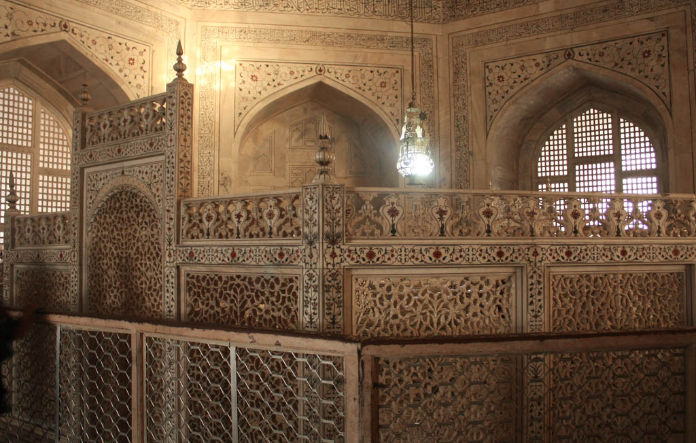
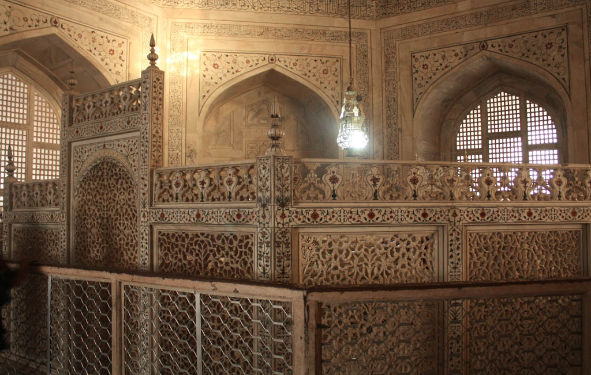

História
O Taj Mahal foi construído pelo imperador Shah Jahan em memória de sua esposa Mumtaz Mahal. A construção iniciou em 1631 e foi concluída em 1648, levando cerca de 20 anos para ser erguida. É uma das maiores provas de amor do mundo, feito em mármore branco e pedras preciosas.
Arquitetura
A arquitetura do Taj Mahal combina elementos de estilos islâmico, persa, otomano e indiano. A estrutura principal é uma grande cúpula cercada por quatro minaretes e rodeada por jardins e pavilhões.
Significado Cultural
O Taj Mahal é um símbolo do amor eterno e uma obra-prima da arquitetura mundial. Representa a riqueza e o poder do império Mughal, e sua beleza continua a atrair visitantes de todo o mundo.
Como Surgiu?
O Taj Mahal surgiu em um contexto de grande esplendor e prosperidade para o império Mughal. O imperador Shah Jahan decidiu construir o mausoléu em memória de Mumtaz Mahal após sua morte em 1631. O projeto foi um reflexo do poder e da riqueza do império, e também um meio de demonstrar o compromisso pessoal e a devoção do imperador.
A construção do Taj Mahal envolveu a contratação de arquitetos e artesãos de várias partes do império e do mundo islâmico. O trabalho foi realizado sob condições desafiadoras, mas o resultado foi uma obra-prima que continua a ser um dos maiores testemunhos do legado Mughal.
Quando e Por Que Surgiu?
O Taj Mahal foi erguido entre 1631 e 1648, durante o reinado de Shah Jahan, na cidade de Agra, Índia. A construção foi motivada pela necessidade de criar um monumento grandioso em memória de Mumtaz Mahal, a esposa amada do imperador. Sua morte trouxe uma imensa tristeza a Shah Jahan, e o Taj Mahal foi concebido como um símbolo eterno desse amor e devoção.
O monumento não apenas homenageia Mumtaz Mahal, mas também reflete a rica herança cultural e arquitetônica do império Mughal. O Taj Mahal se tornou um ícone de beleza e um testemunho da capacidade dos Mughal em criar obras de arte duradouras.
Curiosidades
- A palavra 'Taj Mahal' significa 'Coroa do Palácio' em persa.
- O Taj Mahal é um Patrimônio Mundial da UNESCO desde 1983.
- Durante a Segunda Guerra Mundial, o Taj Mahal foi coberto com um manto para protegê-lo dos bombardeios.
- O monumento é cercado por um belo jardim que simboliza o Paraíso Islâmico.
Galeria

 

Música
Ouça uma música feita por um cantor brasileiro que, por coincidência, se chama Taj Mahal.